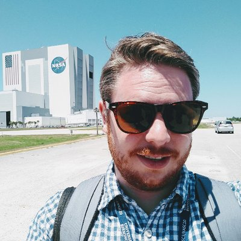

Missions & Leadership
I've led or contributed to five NASA flight missions since 2011 — from concept development through launch and operations — as well as supporting national security space programs. Each involved building software systems, managing cross-functional teams, and making high-stakes decisions under uncertainty.
Nancy Grace Roman Space Telescope
Operations Project Scientist
Leading science operations planning for NASA's next astrophysics flagship — a $4.3B wide-field infrared survey observatory, now fully assembled and targeting launch in fall 2026. Responsible for ensuring observatory operations are optimized to achieve science objectives across dark energy, exoplanet microlensing, and galactic structure surveys. Member of the Project Scientist team coordinating Cycle 1 community proposals.
Pandora SmallSat
Deputy Project Scientist
Oversaw science requirements and Observatory design for this Astrophysics Pioneers Program mission studying how stellar activity contaminates exoplanet transmission spectra. Led the mission from concept through integration, testing, and successful launch on January 11, 2026 aboard a SpaceX Falcon 9. The mission is now in orbit and commissioning.
ULTRASAT
Participating Scientist
Contributing to NASA's participation in the Israeli-led Ultraviolet Transient Astronomy Satellite, a wide-field UV space telescope that will survey the transient sky. ULTRASAT will detect stellar explosions, merging neutron stars, and other time-domain events in the ultraviolet.
TESS (Transiting Exoplanet Survey Satellite)
Associate Project Scientist & GI Program Director
Served as Associate Project Scientist and Director of the Guest Investigator Program, managing community access to TESS data and observations. Led the program through its primary mission phase, supporting hundreds of investigators worldwide. Co-led the discovery of TESS's first habitable-zone Earth-sized planet (TOI-700 d).
Kepler & K2
Guest Observer Office Director
Joined the Kepler mission at NASA Ames Research Center as a research scientist; promoted to Director of the Kepler/K2 Guest Observer Office in 2014. Led a team developing proposal calls, organizing reviews, and building community analysis software. Part of the small team that pioneered the K2 mission after loss of spacecraft fine pointing control. Served on the science and mission leadership teams.
Open Source Software
I've shipped production Python packages across four NASA missions — from observation schedulers and visibility tools to data analysis frameworks used by thousands. 94 repositories on GitHub, contributor to 4 NASA organizations.
Pandora SmallSat
Flight Planning LeadI lead flight planning software for NASA's Pandora SmallSat. I built the observation scheduling and target visibility tools that determine what the spacecraft observes and when — parsing observation calendars, computing observability windows against orbital constraints, and generating command products.
Lightkurve
★ 380+ · 1,200+ citationsCore developer of the standard Python package for analyzing time-series data from NASA's Kepler, K2, and TESS missions. Used by thousands of researchers worldwide. Features aperture photometry, systematics correction via linear algebra and Gaussian Processes, periodogram analysis, and pixel-level diagnostics.
Kepler/K2 Community Tools
★ 119 (pyke)Led development of the KeplerGO software suite — the official community tools for NASA's Kepler and K2 missions. Includes data reduction pipelines, field-of-view calculators, target pixel file animators, and publication tracking databases. Used by hundreds of astronomers for proposal preparation and data analysis.
Selected Work
Over 150 refereed publications with 31,000+ citations (Google Scholar). Selected papers below highlight signal detection, statistical modeling, simulation, and open-source software.
The Pandora SmallSat: A Low-Cost, High Impact Mission
First-author paper describing the end-to-end design, simulation tools, and management approach for the Pandora mission. Covers how the team built high-fidelity parameterized simulation and modeling tools to estimate performance, and how disruptive agile management delivered a 0.44 m space telescope on a SmallSat budget.
Barclay, Quintana, Colón et al. →A Sub-Mercury-Sized Exoplanet (Kepler-37b)
Detected the smallest known planet by extracting an exoplanet transit signal with a depth of just 20 parts per million from noisy photometric data. Used asteroseismology to precisely characterize the host star and constrain the planet radius to smaller than Mercury.
Barclay, Rowe, Lissauer et al. →Predicting TESS Exoplanet Yields via Simulation
Built a large-scale Monte Carlo simulation of the TESS mission — synthesizing stellar populations, injecting planetary signals, and modeling detection pipelines — to predict the mission's planet yield. Predictions accurately matched actual discoveries years later.
Barclay, Pepper & Quintana →TESS's First Habitable-Zone Earth-Sized Planet
Co-led the discovery and statistical validation of TOI-700 d, a 1.19 R⊕ planet receiving 86% of Earth's insolation. Combined multi-sector time-series analysis, Bayesian false-positive probability calculations, and ground-based follow-up to confirm the detection.
Gilbert, Barclay, Schlieder et al. →First Earth-Sized Planet in the Habitable Zone
Co-discovered Kepler-186f, a 1.1 R⊕ planet in the habitable zone of an M dwarf — proof that Earth-sized worlds exist where liquid water is possible. Required distinguishing a genuine signal from correlated noise in 4 years of photometry.
Quintana, Barclay, Raymond et al. →Oldest Known Terrestrial Planet System
Discovered Kepler-444, a system of five sub-Earth-sized planets orbiting an 11.2-billion-year-old star. Applied asteroseismic age-dating (Bayesian stellar modeling) to show Earth-sized worlds have formed throughout most of cosmic history.
Campante, Barclay, Swift et al. →About
I'm an astrophysicist at NASA's Goddard Space Flight Center, where I've been a civil servant since 2023. Before that I was a research scientist at UMBC/NASA (2017–2023) and at the BAER Institute/NASA Ames (2011–2017).
My day job is leading science operations for the Roman Space Telescope, but my career has been a blend of hands-on software engineering and technical program management. I write production Python, build scheduling and planning tools for space telescopes, apply Bayesian methods (MCMC, Gaussian Processes, nested sampling) to extract weak signals from noisy observations, and ship Monte Carlo simulations to predict mission outcomes. I've built or contributed to numerous open-source Python packages across four NASA missions, including Lightkurve (1,200+ citations, used by thousands of researchers) and the Pandora SmallSat flight planning software.
I've led teams through every phase of the space mission lifecycle — from proposal writing and requirements definition, through hardware I&T and launch, to operations and long-term data analysis. I care about shipping reliable software, making principled decisions under uncertainty, and building systems that scale.
I grew up in Sheffield, England. BSc Physics with Astrophysics, University of Leeds (2006); MSc, University of Manchester / Jodrell Bank (2007); PhD, University College London / Armagh Observatory (2011).
Awards
- NASA Early Career Achievement Medal (2022)
- NASA Exceptional Public Service Medal (2017)
- ASD Peer Award (2019)

Core Competencies
Signal Detection & Time Series
Extracting weak, periodic, or transient signals from noisy, high-dimensional data. Transit detection, anomaly identification, and systematics modeling in multi-year photometric datasets.
Bayesian Inference & Modeling
MCMC, nested sampling, Gaussian Processes, hierarchical models. Designing probabilistic frameworks for parameter estimation and model comparison under uncertainty.
Python & Production Software
Shipped 12+ open-source Python packages across 4 NASA missions. Core developer of Lightkurve (1,200+ citations). Deep experience with NumPy, SciPy, pandas, scikit-learn, Poetry, CI/CD, and test-driven development.
Technical Program Leadership
End-to-end management of complex technical programs: requirements, milestones, risk, and cross-functional coordination across engineering, science, and operations teams of 50–200 people.
Simulation & Prediction
Large-scale Monte Carlo simulations to forecast mission performance. Population synthesis, injection-recovery testing, and forward modeling of instrument response.
Evaluation & Benchmarking
Designed evaluation frameworks and ran multi-year competitive review programs for three NASA missions. Built injection-recovery test pipelines, developed assessment rubrics, and made resource allocation decisions under competing priorities.
What I Want to Work On Next
AI Safety & Alignment
Bringing rigorous statistical reasoning and uncertainty quantification to the problem of making AI systems reliable and trustworthy. My career has been about making high-stakes decisions under uncertainty — I want to apply that to the most important technical challenge of our time.
Complex System Evaluation
Designing evaluation frameworks for systems too complex to fully specify. I've built injection-recovery pipelines and false-positive tests for planet detection — the same mindset applies to evaluating language model capabilities and limitations.
ML Infrastructure & Tooling
Building production-grade Python systems that researchers and engineers can rely on. 15 years of designing APIs, writing tests, shipping packages to PyPI, and maintaining software used by thousands of people.
Technical Leadership
Leading cross-functional teams through ambiguous, high-stakes technical programs. I've managed teams of 5–200 across engineering, science, and operations — and I know how to ship on a deadline.